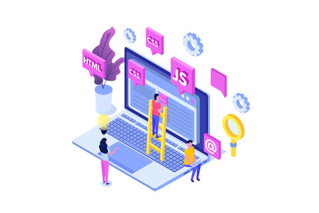

SOFTWARE DEVELOPER
HTML,CSS,BOOTSTRAP,JAVASCRİPT,JQUERY
-

-

-
Information
Zeynep Özşahin, 2001 yılında Konya’da doğmuştur. Orta ve lise öğretimini Konya’da bitirmiştir. Yönetim Bilişim Sistemleri bölümü öğrencisi olarak lisans eğitimime devam etmektedir. Yönetim bilişim sistemlerinden mezun olarak profesyonel olarak, yönetim alanında kendini çok iyi konumlandırmış, yazılım alanında birçok yenilik katmış ve yazılımla birlikte yönetimi entegre ederek çok iyi bir şekilde mezun olmayı hedeflemektedir. İş dünyasında sürdürülebilirlik, inovasyon ve etik değerlere dayalı bir liderlik anlayışı benimsemek ilkeleri arasındadır. Vizyonu, kurumsal dünyada sadece kar elde etmekle kalmayıp, aynı zamanda topluma ve çevresine de büyük oranda katkı sağlayan bir girişimci ve lider olmaktır. Toplumsal sorumlulukları ve çevre faktörlerini gözeterek, iş dünyasında sadece finansal başarı değil, aynı zamanda insani değerlere ve insanın değdiği her şeye dokunmak ve sosyal değer oluşturmayı hedeflemektedir. Takım çalışmasına büyük oranda önem veren ve takım ruhuna güvenen biri olarak çeşitlilik ve iş birliğine dayalı bir liderlik tarzını benimseyerek, takım çalışmasına en iyi şekilde katkı sağlamayı hedeflemektedir. Geleceğin iş dünyasındaki değişimlere inovasyonlara büyük oranda dikkat ederek ve uyumu hayatına entegre ederek, öğrenmeye açık olarak ve sürdürülebilir başarılar elde etmek için bilgi birikimini, liderlik yeteneklerini ve etik değerlerini birleştirerek şirketlere katkı sağlamayı amaçlamaktadır.
About Us
Linkedln kanalım
Linkedln.com/www.linkedin.com/in/zeynep-özşahin-47763a258
Concant Us
İnstagramdan bana ulaşabilirsiniz
instagram.com/zeynepozshn_